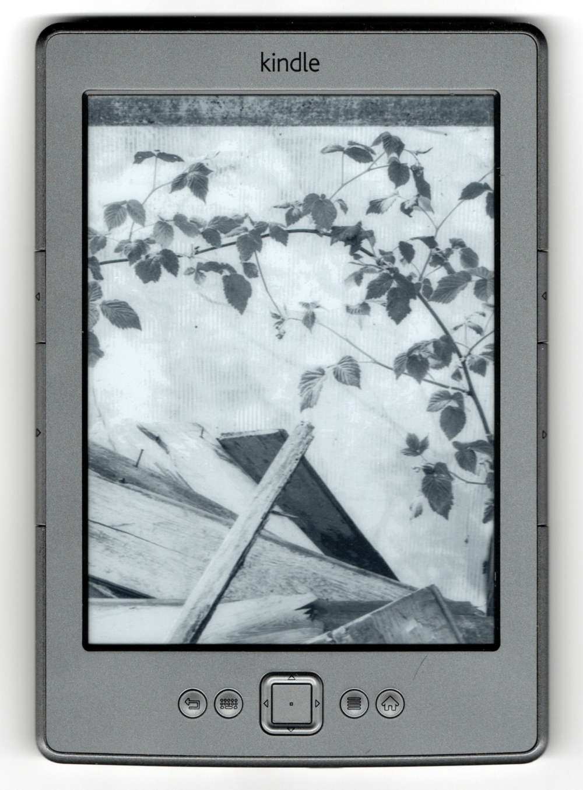
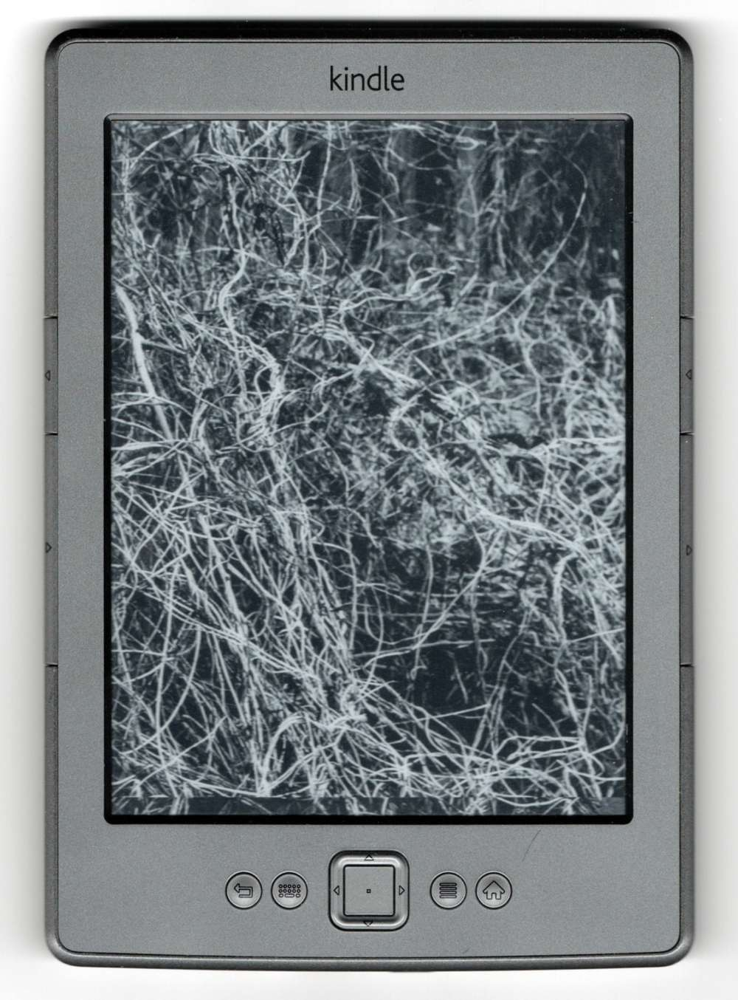
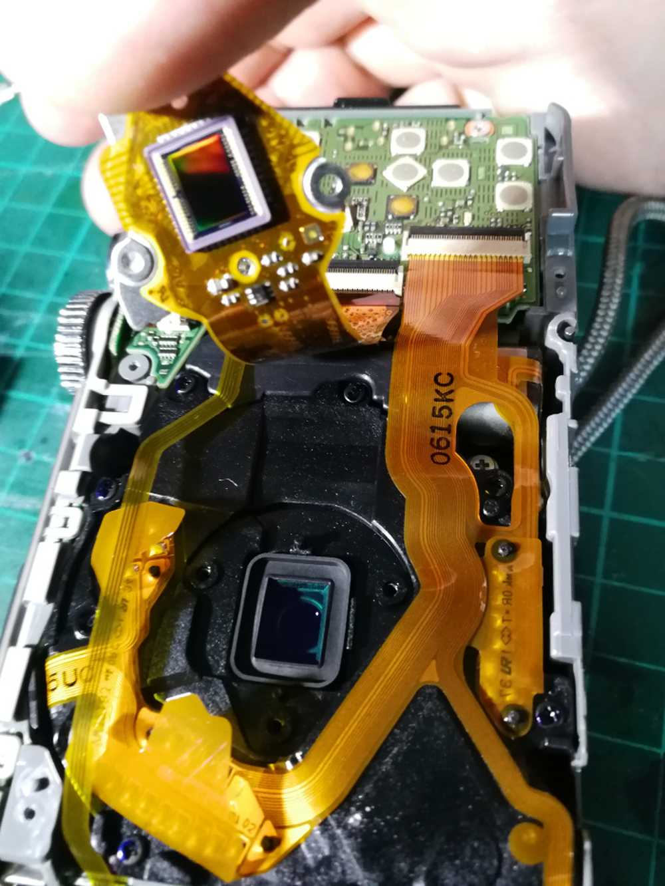
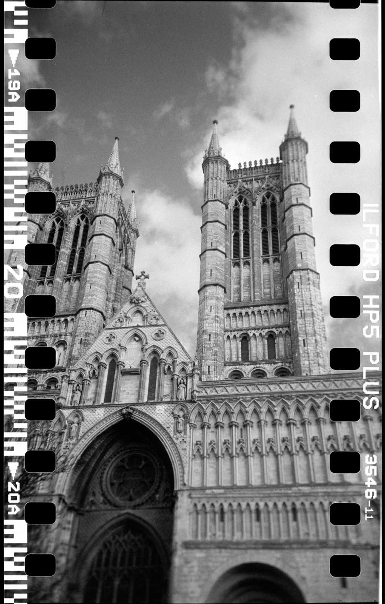
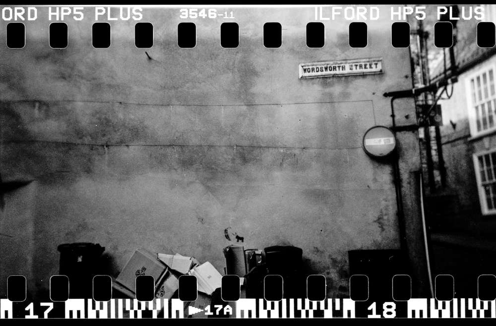

Inspired by Antony Cairns. This short script was a tiny side project during my COVID restricted masters in photography. With no access to a darkroom I experimented with obscure/misunderstood digital technologies for image-making.
The aim is to demonstrate e-ink technology as a medium for reproduction and the act of repurposing a commercial artefact for unconventional means (in this case appropriating monochrome images -the more indeterminate and abstract the better).
Originally a python script that called system commands, I rewrote the script in bash for less dependencies.
Besides the novelty of the process, it allowed me to understand how reproduction works on the e-ink screen, its behaviour and limitations. I found that having a strong contrast applied to images worked best, this may be down to the e-ink screen being limited to 3bit Greyscale (8 shades) -some of the lighter shades of grey lack clarity and are lost to the grey screen.
Kindle ereader as a means of image reproduction
To reproduce images on the Kindle, I purposefully chose vague and abstract subject matter playing with the metaphor of culture appropriating nature. These are scans of the Kindle and image.

Reflection
This started as a unconventional experiment during the pandemic quarantine, one that approaches {nature-culture} theme from a different approach. The more I reflect on it, the less unreasonable it becomes. The act of repurposing cultural artefact for another purpose is a subversive act, mimicking an aspect of the core theme. Additionally it offers discourse on cultural/digital appropriation of nature.
Remove the back panel by removing screws on the sides and bottom. Carefully remove the panel, and unclip the lcd power and data cables by opening their latches. This can be fiddly so take time. Also the preview switch (top right) can fly-out when taking the back off, but its not hard to put back.
The back panel
The sensor is hidden behind shielding. Remove it by unscrewing the surrounding screws.
Behind the shielding is the CCD sensor held in place with three screws.
Unscrew the three screws and lift gently. Remove the IR filter found underneath the sensor. The camera is probably dirty, so it may need a clean with air.
Sensor
The cameras IR Cut-Off Filter. Assemble the camera back making sure to secure the sensor so that it is straight and level. Also be careful with the ribbon cables.
Tiny filter
Apply an infrared filter and set the camera to black and white.
[[Holga]] setup involving foam packaging and rubber bands:
Foam packaging peanuts jammed around a 35mm canister and a 120 spool fitted with 2 elastic bands
The results show a lot of messed up compositions where I should have had the camera either lower or more to the left. Its hard to judge what will be in frame or not. The images I took are around Lincoln.
Lincoln cathedralRuddocks of lincolnGuildhallMichaelgateWordsworth street